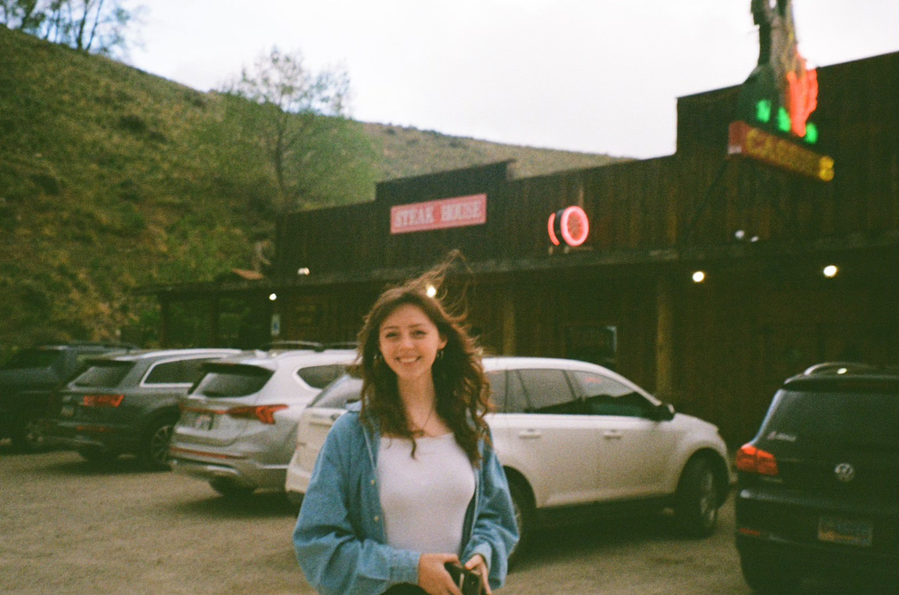
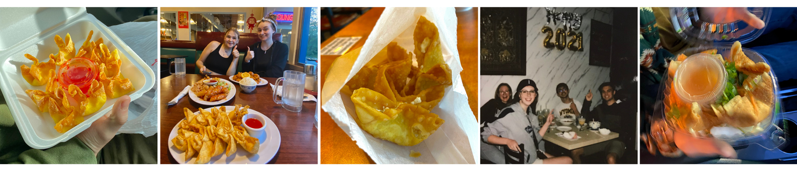

Abigail Landwehr's Site
Abigail Landwehr is a multimedia journalist. Her interest ranges from anything the broad term covers: writing, photography, videography, design, and audio. She just loves the storytelling process the most. You can check out her multimedia portfolio here.
She grew up in Wyoming, about an hour and a half away from Yellowstone- that also means enough “Wyoming doesn’t exist” jokes to last her a lifetime.
Her top five crab rangoon spots in no particular order:
(A very professional crab rangoon enthusiast.)